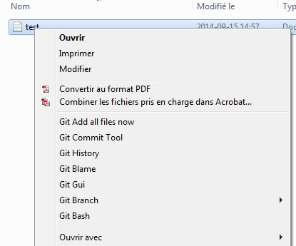
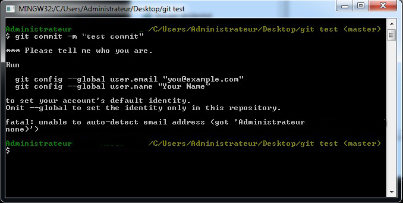
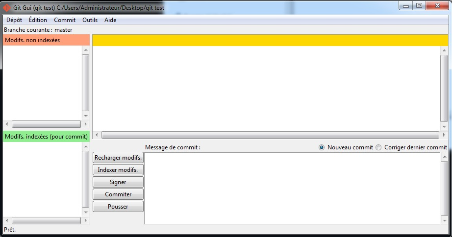
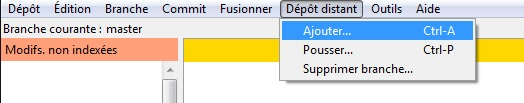

Introduction à git

Pourquoi utiliser un système de gestion de versions?
-
Collaborer avec d'autres programmeurs sur une base de code.
-
Avoir un outil pour gérer le code, les ajouts/modification aux code.
-
Éviter de faire manuellement des merges de base de code
Ouin, dude ce bout de code là
faut que tu le change
pour ma version dans ma clée USB
Un mot sur SVN
Encore utilisé dans certaines entreprises 2014. Raisons:
- Les gens sont habitués
- Interface sympathique: Tortoise SVN
Pourquoi git en particulier?
- Simple, versatile, rapide
- Distribué
(Fait pour un workflow avec plein repository différents)
- Libre et gratuit
Qui utilise git?
- Google (Android, Chrome plusieurs autres)
- Microsoft
- Plusieurs projets FOSS dont Linux
- Moi (yeah!)
Distribué vs Centralisé
La popularité de git est due au fait qu'il est distribué
Un seul repository/serveurs
- George édite son fichier
- George envoit son fichier sur le serveur
- La famille à George va updater le fichier que George a modifié à partir du serveur
Plusieurs repository/serveurs
- George édite son fichier
- George édite son fichier et le pousse sur son repo github/gitLab/son propre serveur
- Ginette tire(pull) les modifs de George et les pousse sur son serveur (ex.: git.ginette.com/projet)
- Puisque Ginette code bien, la famille lui fait confiance et pull son code et utilise sa version
Installation
(Utiliser google est pertinent)
Linux
ubuntu & debian:
apt-get install git
(et/ou):
apt-get install git-gui
Windows
Google «git download»: http://git-scm.com/downloads
Mac
«Let me google that for you»
Choix pertinents
pour git sur Windows
Durant l'installation:
- Choisir le git-cheetah-plugin pour les menus contextuels
- Variable PATH: Choisir «Use git from the windows command prompt»
Commandes Git
Créer un repo avec le dossier courant:
git init
Ajouter des fichiers dans le repo:
git add .
Faire un commit avec un message
git commit -m "mon message"
Tirer des choses d'un repo distant
git pull origin
Pousser des choses sur un repo distant
git push origin
Prendre cloner un repo distant localement
git clone git@github.com:antoineMoPa/a-mo-pa.com.git
On exécute ces commandes en lançant Git Bash en faisant un clic droit dans le dossier choisi.
Menu contextuel
Aperçu du menu (Avec git-cheetah, sur windows)

Configuration de git
Lors de la première tentative de commit, git avertira qu'il faut lui indiquer des informations.
Simplement suivre ce qui est affiché à l'écran.

Git commit tool
Outil pour écrire de beaux messages de commit

Git Gui
Ajout de repos distants

Re-Pourquoi utiliser git
- Cloner des librairies open source/libres
- Pouvoir utiliser github.com et gitlab.com pour héberger du code gratuitement
- C'est bon dans un CV de programmeur
Merci, Fin
Yo!